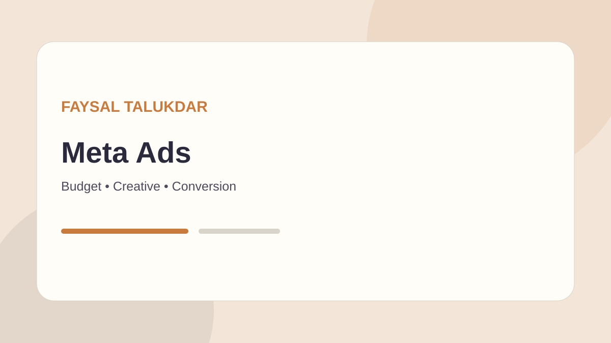
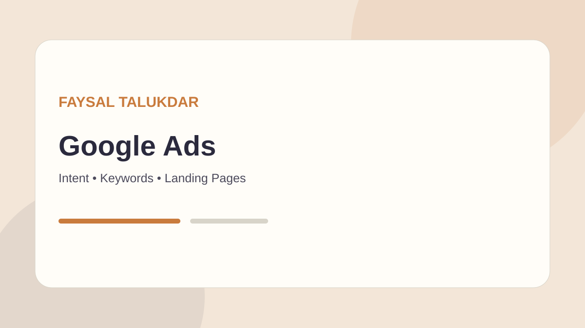
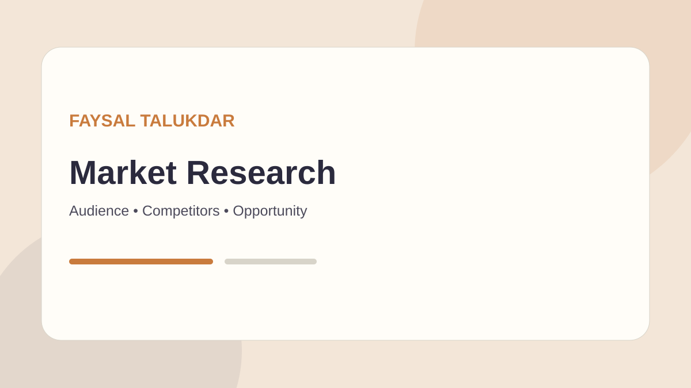

Social Media / Meta Ads
Campaign strategy, audience research, creative direction, testing, retargeting and optimization for Meta platforms.
- Campaign & funnel planning
- Audience and creative testing
- Optimization & reporting
Performance Marketing · Research · Growth
I'm Faisal Talukdar. I help businesses turn marketing questions into clearer decisions, stronger campaigns and practical growth opportunities across paid media, lead generation and market research.

Platforms I work across
AI-assisted research & workflow
What I do
From acquisition to market understanding, the focus stays on clear decisions, useful testing and a path toward measurable business outcomes.
Campaign strategy, audience research, creative direction, testing, retargeting and optimization for Meta platforms.
Search-focused campaign planning that connects intent, messaging, landing pages and conversion goals.
A practical research process for understanding customers, competitors, positioning and opportunities before spending more.
Build acquisition journeys designed to turn attention into qualified conversations and useful business enquiries.
Connect marketing activity to the wider business question: who to reach, what to offer and what to improve next.
Use modern AI tools to accelerate research, synthesis, content workflows and decision support—without replacing human judgment.
Selected work
This portfolio is designed to make verified work easy to add as projects mature. Current examples focus on real project direction and reusable case-study structure rather than invented performance numbers.

A practical project focused on clearer product discovery, category organization and a simpler path from browsing to enquiry.
Reserved for a verified Meta or Google Ads project. Add campaign context, audience, spend, conversion data and learnings here.
Reserved for a verified lead-generation engagement. Add funnel, qualification process, cost-per-lead and lead-quality evidence when available.
How I work
A simple workflow keeps marketing activity connected to the actual business question.
Clarify the offer, audience, market, goals and constraints.
Study customer signals, competitors, channels and opportunities.
Turn the strategy into campaigns, messages and experiments.
Review evidence, learn what matters and decide what to change next.
About Faisal
I'm Faisal Talukdar, a Digital Marketing Specialist working across paid advertising, market research, lead generation and business growth.
My approach is deliberately practical: understand the business, investigate the market, launch what is worth testing, then use evidence to improve the next decision.
This site is also designed as a living professional portfolio. Verified projects, results, testimonials and deeper work samples can be added here over time without changing the core experience.
Insights
Short practical frameworks for paid media, research and growth. These are intentionally structured so deeper verified examples can be added later.

A decision framework for reviewing campaign structure, audience quality, creative performance and conversion signals.
Read insight
How to connect search intent, keyword themes and landing-page relevance.
Read insight
A repeatable starting point for customers, competitors, positioning and opportunities.
Read insightLet's connect
Tell me what you are trying to achieve. If there is a useful fit, we can discuss the next step.
Project enquiry
Next step
Let's turn your marketing challenge into a practical conversation about the market, the message and the next move.